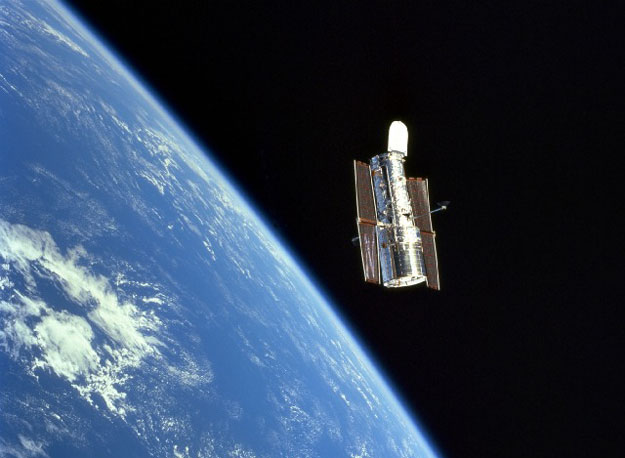

планируете наблюдать Луну и планеты или галактики и объекты глубокого космоса.
Зеркальные телескопы Оптическая система построена на основе большого вогнутого зеркала, которое собирает и фокусирует свет. Окуляр располагается на боковой поверхности трубы. Этот тип считается лучшим для любительских телескопов. Наибольшее распространение получили устройства системы Ньютона. Достоинства. Единица апертуры имеет самую низкую стоимость по сравнению с другими типами. Телескоп имеет простую конструкцию и может быть даже собран энтузиастами самостоятельно. Двухзеркальная оптическая система выдает наблюдателю правильное изображение. В отличие от других типов, образование росы на поверхностях оптики при снижении низких ночных температурах почти никогда не происходит. Недостатки. Зеркальные телескопы требуют дополнительного обслуживания - периодической юстировки. Эта процедура заключается в регулировке положения зеркала. Во время наблюдений труба открыта. Это может приводить к появлению в системе пыли, а также временного ухудшения качества из-за воздушных потоков и перепада температур.
Катадиоптические телескопы. В конструкции их оптической системы использованы и зеркала и линзы. Самой распространенной является система Кассегрена. Достоинства. Компактность. Телескоп самый компактный. Он имеет короткую трубу и небольшой вес. Это делает его самым удобным для транспортировки и хранения. Этот телескоп легко поместится в автомобиле и в стенном шкафу. Катадиоптические телескопы незаменимы при занятиях астрофотографией. Особенно при съемке объектов с длительной экспозицией. Недостатки. Кассегрены немного уступают в резкости рефлекторам и рефракторам. Диагональное зеркало выдает наблюдателю зеркальное изображение. Если возникает неисправность, то прибор необходимо отправлять производителю. Юстировку в домашних условиях сделать невозможно.
Для правильной работы телескопов необходима устойчивая монтировка. Даже самый качественный телескоп не даст хорошего изображения, если его установить на шаткую монтировку. Ведь малейшую тряску телескоп увеличит до размеров землетрясения. Два распространенных типа монтировок - экваториальная и азимутальная. Азимутальная установка позволяет вращать телескоп по двум осям: вверх-вниз и вправо-влево. Чтобы удерживать объект в поле зрения, Вам придется поворачивать прибор по осям по мере вращения небесной сферы. Преимущества азимутальной установки - легкость, простота конструкции и невысокая цена. Экваториальная монтировка облегчает процесс трекинга объекта. Это можно делать вручную с помощью кабелей контроля. На некоторых монтировках устанавливается механизм для автоматического поворота телескопа. Монтировку устанавливают таким образом, чтобы ее полярная ось была сориентирована по Полярной звезде.
Дополнительные возможности. Высокотехнологичные компьютерные системы управления позволяют выполнять автоматическое наведение телескопа на объект из загруженного в память каталога. Это облегчает занятие астрономией, выполняя всю скучную работу.
| Типы телескопов | Для каких пользователей |
|---|---|
| Линзовые телескопы | для новичков |
| Зеркальные телескопы | для любителей |
| Катадиоптические телескопы | для продвинутых |